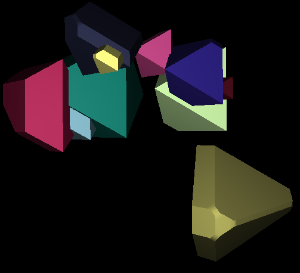

MATLAB 3D viewer demo 2
In this example, we will demonstrate the surface rendering capabilities of the 3D viewer.
Rather than using an existing dataset, we will create a dummy one, in the shape of multiple balls or octahedrons. The balls will be created one by one, from a volume where all pixels are 0, but within the object volume, whose location and size is set randomly. From this volume, we ask the 3D viewer to create an iso-surface (one for each object), and to display it in the 3D universe, with a random color.
Contents
Make sure Java3D is installed
If not, try to install it
if ~IsJava3DInstalled(true) return end
Let us define the size of our target image volume. Not too big to save memory.
width = 128; height = 128; depth = 64;
Here we determine how many objects we want, and their mean size. We will generate them randomly.
nballs = 10; radius = 20;
We pre-allocate the image volume.
I = zeros(width, height, depth, 'uint8');
To simplify the object creation step, we create the grid containing each pixel coordinates.
[X, Y, Z] = meshgrid(1:width, 1:height, 1:depth);
Since we want to add the objects in live mode, we need to create and show the universe before creating and adding the balls. So we call Miji first,
Miji(false)
Then deal with the 3D universe.
universe = ij3d.Image3DUniverse(); universe.show();
Now add the objects one by one, in a loop.
for i = 1 : nballs
Determine the ball center and radius randomly.
x = round( width * rand );
y = round( height * rand );
z = round( depth * rand );
r = round( radius * (1 + randn/2) );
intensity = 255;
Logical indexing: we find the pixel indices that are within the object's volume.
% This gives you a ball % index = (X-x).^2 + (Y-y).^2 + (Z-z).^2 < r^2; % This gives you an octaedron index = abs(X-x) + abs(Y-y) + abs(Z-z) < r;
Then we set the intensity of these pixels to 'intensity' (here, 255) and the value of pixels outside the object volume to 0.
I(~index) = 0;
I(index) = intensity;
We now export this MATLAB volume to a new ImagePlus image, without displaying it.
imp = MIJ.createImage(['Ball ' int2str(i)], I, false);
It is possible to specify the color of the iso-surface at creation, but the 3D viewer expects a Color3f object, which is part of the javax.vecmath package. We determine its actual color randomly again.
color = javax.vecmath.Color3f(rand, rand, rand);
Finally, we add the object to the 3D universe, in the shape of an iso-surface. Arguments meaning is detailed below.
c = universe.addMesh(imp, ... - this is the source ImagePlus color, ... - this is the destination color ['Ball ' int2str(i)], ... - the name of the iso-surface 1, ... - the threshold, see below [true true true], ... - what channels to display 1 ... - the resampling factor );
Ok, so the meanings of the imp, color and name arguments are trivial. The threshold value, here set to 1, is important for this display mode.
Isosurface rendering uses the fast marching cube algorithm, which assumes that there is a threshold that separates the background from the foreground. In our case, it is easy to determine, since pixels out of the ball have a 0 intensity, and inside the ball they have an intensity of 255. So any threshold value between these two numbers would have worked.
The array containing the 3 boolean values is used to specify what channels will be included in the surface rendering, if you feed it a color image. In our case, we simply set them all to true and do not care much. Finally, the resampling factor is used to win some time and memory at the expense of precision. If set to more than 1, the image is downsampled before the marching cube algorithm is applied, resulting in less meshes obtained in smaller time.
Now, this individual step is going to take some time, so it is very likely that you see each ball appearing one by one. That is because computing the surface mesh is expensive, so the rendering lags a bit behind the command.
end
That's it. Note that some of our objects might be clipped because they cross the boundaries of the volume we defined in the variable I.

Jean-Yves Tinevez \<jeanyves.tinevez at gmail.com\> - July 2011